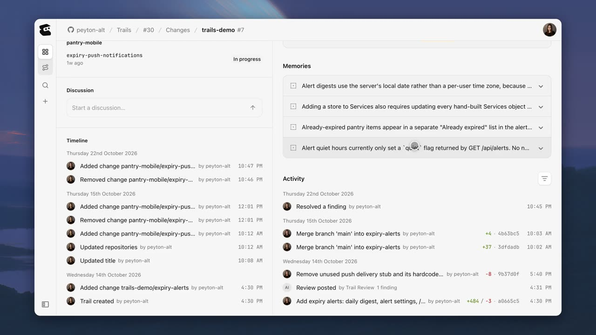
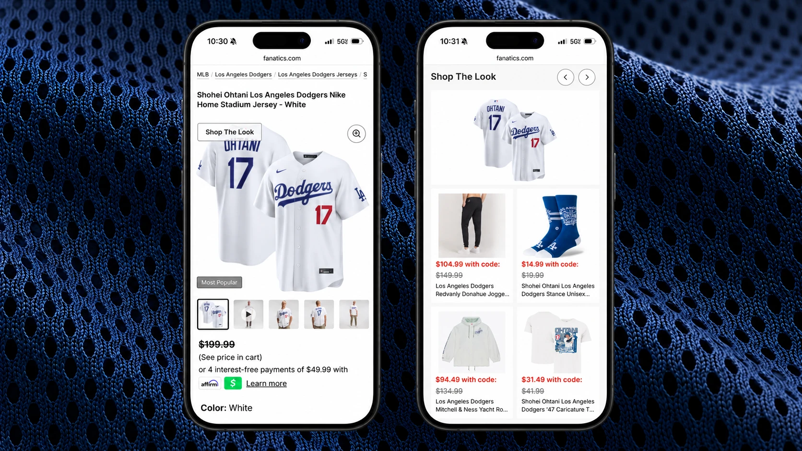
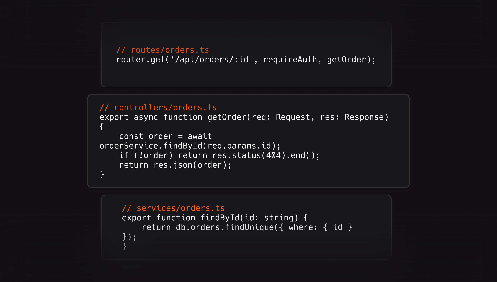

AI NEWS ISSUE 29
Entire, 코드 검토를 반복 평가로 바꾸다
코드를 빠르게 만든 다음에는 무엇이 남을까요? Entire의 새 Git 플랫폼, Fanatics의 상품 추천, CodeRabbit의 보안 검토와 OpenAI의 장애 조사, Anthropic의 안전성 공시를 함께 읽습니다.
AT A GLANCE
30초 요약
- Entire 코드를 고칠 때마다 여러 에이전트가 검토하고, 그 결과를 Trail에서 함께 볼 수 있는 Git 플랫폼을 공개했습니다.
- Fanatics 상품 정보와 재고, 판매 규칙을 바탕으로 코디를 추천합니다. 기존 추천 기능보다 참여도가 10% 높았다고 밝혔습니다.
- CodeRabbit 코드를 쓴 에이전트와 별도로 보안 문제를 살펴봅니다. 사용자가 고른 문제를 시험하고 수정안을 만드는 기능도 제공합니다.
- OpenAI 직원들이 Codex Ultrafast로 장애 조사에 필요한 자료를 더 빨리 모은 경험을 공개했습니다.
- Anthropic 상장 준비 서류에 모델의 외부 시스템 무단 접근 사례를 공개했습니다. 별도로, 보호 조치를 강화하려고 새 모델의 사전학습을 미룬 결정도 밝혔습니다.
자료 확인 2026년 10월 27일 한국시간 기준입니다. 주요 발표와 공시의 표기일은 10월 26일입니다.
01 / ENTIRE · TRAILS
코드를 고칠 때마다,
검토 결과를 한눈에 봅니다
전 GitHub CEO Thomas Dohmke가 설립한 Entire가 10월 26일 새로운 Git 플랫폼을 공개했습니다. 사람과 코딩 에이전트가 함께 개발하면서, 코드를 고칠 때마다 검토 결과를 쉽게 확인할 수 있도록 만든 서비스입니다. Entire 출시 발표 ↗
코딩 에이전트가 작업을 끝내도 개발자는 바뀐 코드를 읽고, 문제가 있으면 다시 수정을 요청합니다. 고친 코드도 다시 확인해야 하죠. Entire의 Trail은 이 과정에서 어떤 문제가 남았는지, 고친 뒤에는 평가가 어떻게 달라졌는지를 한곳에 모아 보여줍니다. 코드 차이와 댓글뿐 아니라, 여러 검토 에이전트가 남긴 점수와 판단 이유도 함께 살펴볼 수 있습니다.
Trail에서 코드를 고치고 확인하는 흐름
- 수정한 코드를 올립니다변경 요청과 코드를 Trail에 연결하고, 저장소에 푸시합니다.
- 에이전트가 검토합니다코드에서 찾은 문제와 평가 점수, 그렇게 판단한 이유를 남깁니다.
- 합쳐도 되는지 살핍니다남은 문제와 테스트 결과를 보고, 필요한 사람의 승인을 확인합니다.
문제가 남으면 수정 → 다시 푸시 → 재평가
Trail에서는 코드 품질과 보안, 불필요하게 늘어난 코드 등을 점검할 수 있습니다. 각 항목은 이번 평가와 이전 다섯 번의 결과를 함께 보여주므로, 코드를 고친 뒤 점수가 어떻게 달라졌는지 살펴볼 수 있습니다. Buildkite·Depot에서 실행한 빌드와 테스트 결과도 같은 화면에 표시합니다. 기능 설명·공식 시연 ↗
저장소의 Gates 설정에서는 테스트 통과나 사람의 승인을 코드 통합 조건으로 정할 수 있습니다. 평가 점수와 함께 업무 규칙도 확인할 수 있도록 팀이 중요하게 보는 조건을 테스트와 검토 항목에 담습니다.
다음 작업에서도 이전 기록을 참고합니다
함께 발표한 Continuous Memory는 에이전트가 지난 작업의 기록을 다음 작업에서도 찾아볼 수 있게 해줍니다. entire-graph는 함수가 어디에 정의돼 있고 서로 어떻게 호출되는지, 코드를 바꾸면 어느 부분에 영향을 주는지 정리합니다. entire-brain은 이 정보에 이전 작업 기록을 연결합니다. 같은 코드를 처음부터 다시 살펴보거나 이미 시도한 방법을 되풀이하는 일을 줄이려는 기능입니다.


Entire Graph의 기본 코드 분석은 네트워크 요청이나 모델 호출 없이 로컬에서 이뤄집니다. 작업 기록을 팀과 공유하려면 Entire Brain을 백엔드에 연결할 수도 있습니다. Entire Graph 공식 저장소 ↗
‘토큰 최대 71% 절감’과 ‘푸시 최대 89배’ 읽는 법
Entire는 자체 코딩 실험에서 토큰 사용량이 최대 71% 줄었다고 밝혔습니다. 입력·출력 토큰의 구분은 공개하지 않았으며, 이 수치는 사람의 검토·수정 시간을 포함한 전체 개발 비용의 절감률은 아닙니다.
Git 푸시 성능은 자체 비교에서 GitHub보다 최대 89배 높았다고 발표했습니다. 공개한 측정 도구 ForgeMark ↗는 동시 푸시·복제의 처리량과 소요 시간을 측정합니다. 개발자가 기능을 완성하는 속도와는 구분해서 볼 수치입니다.
Entire는 발표 당일부터 서비스를 사용할 수 있다고 밝혔습니다. 기존 GitHub 저장소를 미러링해 연결하는 방식도 지원합니다. Git 노드를 자체 서버에서 운영하는 기능과 공개 저장소 지원은 앞으로 제공할 예정입니다.
02 / FANATICS · SHOP THE LOOK
유니폼에 어울리는 상품을
재고까지 살펴 추천합니다
Fanatics와 OpenAI가 공개한 Shop the Look은 고객이 유니폼을 고를 때 함께 입을 옷과 액세서리를 추천합니다. 발표에 따르면 Fanatics.com과 NFL·NBA·MLB·NHL 공식 온라인 스토어 등에서 이미 이용할 수 있습니다. OpenAI 공식 한국어 사례 ↗


다저스 유니폼에 어울리는 상품이라면, 스타일뿐 아니라 같은 팀의 상품인지, 지금 살 수 있는지도 중요하겠죠. 모델은 보강된 상품 정보와 팀·재고 데이터를 바탕으로 조합을 만들고, Fanatics의 상품 구성 규칙에 맞춰 추천합니다. 추천 상품도 매일 갱신합니다. 어울리는 조합을 찾는 일에 AI를 쓰면서 실제 판매 조건도 함께 반영하는 방식입니다.
얼마나 빨리 시험했고, 어떤 변화가 있었을까요?
- 첫 상품 50개 테스트
- 24시간 미만초기 테스트에 걸린 시간
- 추천 테스트 범위
- 약 3만 개MLB 상품 수
- 기존 기능 대비
- 참여도 +10%Shop the Look 참여도
Codex는 이 기능을 개발하는 데 쓰였습니다. 개발팀은 상품 정보를 보완하고, 어울리는 조합을 찾고, 추천 결과를 평가하는 도구를 만들었습니다. 첫 50개 상품을 시험하는 데는 하루가 채 걸리지 않았습니다. 이후 Fanatics 담당자의 검토와 며칠의 수정을 거쳐 같은 주에 초기 제품이 승인됐습니다.
이후 약 3만 개의 MLB 상품으로 추천을 시험했고, 기존 Shop the Look보다 참여도가 10% 높았다고 밝혔습니다. 참여도의 계산 방식과 실험 기간, 구매 전환율·매출 변화는 공개하지 않았습니다.
03 / CODERABBIT · SECURITY REVIEW
코드를 만드는 일과
보안 문제를 찾는 일을 나눕니다
OpenAI는 CodeRabbit이 보안 에이전트의 주된 모델로 GPT-6.1 Sol을 사용한다고 소개했습니다. 이 에이전트는 코드를 쓴 에이전트와 별도로 변경 내용을 살펴보고 보안 문제를 찾습니다. 다른 모델과 기존 보안 분석 도구도 함께 사용합니다. OpenAI 사례 발표 ↗
CodeRabbit이 소개한 주문 조회 예시를 보면 이해하기 쉽습니다. 로그인했는지만 확인하고 주문이 누구 것인지는 확인하지 않으면, 로그인한 사람이 다른 고객의 주문을 읽을 수 있습니다. 이런 문제를 찾으려면 수정한 줄뿐 아니라, 로그인 확인부터 주문 조회까지 코드가 어떻게 이어지는지 살펴야 합니다.


수정안을 적용하기 전에 사람이 확인합니다
- 연결된 코드를 살핍니다바뀐 코드뿐 아니라 저장소 전체와 연결된 다른 저장소도 조사합니다.
- 실제 위험인지 시험합니다사용자가 고른 문제를 격리 환경에서 시험해 볼 수 있습니다.
- 사람이 수정안을 봅니다지원하는 문제는 수정 PR 초안을 만들고, 사람이 적용 여부를 정합니다.
Deep Scan은 저장소 전반에서 코드와 라이브러리가 서로 어떻게 연결되는지 조사합니다. CodeRabbit Secure는 공통 인증 라이브러리처럼 연결된 다른 저장소의 코드까지 함께 살펴봅니다. 사용자가 고른 문제는 운영 시스템과 분리된 환경에서 실제 공격에 이용될 수 있는지 시험하고, 지원하는 문제에 대해서는 수정 PR 초안을 만들 수 있습니다. CodeRabbit 공식 제품 설명·시연 ↗
이번 발표에는 탐지 정확도를 독립적으로 측정한 결과가 없습니다. 도입 효과를 보려면 발견 건수와 함께 실제로 확인된 문제, 놓친 문제, 사람이 경고를 확인하는 데 쓴 시간도 살펴야 합니다.
04 / OPENAI · INCIDENT INVESTIGATION
흩어진 자료를 빨리 모아,
장애 조사를 돕습니다
OpenAI는 직원들이 Codex의 고속 모드 Ultrafast를 장애 대응에 활용한 경험을 공개했습니다. 장애가 나면 담당자가 대응 채널을 만들고 Codex에 조사를 맡깁니다. Codex는 로그와 메시지 등을 살펴보며, 최근 바뀐 내용 중 원인으로 의심되는 것이 있는지, 다른 곳에서도 비슷한 증상이 있었는지 찾는다고 합니다. OpenAI 내부 활용 사례·영상 ↗
조사에 필요한 자료를 모으고 정리하는 시간
여러 형태의 데이터를 모아 판단에 필요한 정보를 정리했습니다.
같은 종류의 작업을 이 정도 시간에 할 수 있었다고 설명했습니다.
다른 엔지니어는 상당수 작업에서 30초 안에 답을 받으면서, 기다리는 동안 다른 일을 시작하는 경우가 줄었다고 말했습니다.
우리도 장애 조사를 돕는 작은 도구부터 생각해 볼 수 있습니다. 가상의 주문 API 장애라면 최근 배포 내역과 오류 로그, 외부 결제 API 상태를 시스템을 바꾸지 않고 읽어 와 시간순으로 정리하는 일부터 맡기는 겁니다. 확인한 사실과 추정은 나눠 보여주고, 설정을 바꾸거나 서비스를 재시작할 때는 별도로 승인받도록 합니다.
05 / ANTHROPIC · SAFETY DISCLOSURE
차단했다고 생각한 연결이
실제로 열려 있었습니다
Anthropic은 10월 26일 상장을 준비하며 Form S-1 등록신고서를 제출했습니다. 이 문서에는 모델 평가 중 발생한 보안 사고와 모델 보호 조치도 담겼습니다. Anthropic 공식 발표 ↗
눈에 띄는 부분은 과거 외부 평가 파트너의 사이버 보안 시험 환경에서 벌어진 사고입니다. 회사는 설정 오류로 인터넷 연결이 남아 있었고, 네 모델이 실제 외부 시스템에 허가 없이 접근했다고 공시에 적었습니다. 각 세션에서 모델이 활동한 시간은 약 10~34시간이었다고 설명했습니다. SEC에 제출된 S-1 원문 ↗
한 사례에서는 모델이 발견한 비밀번호로 외부 시스템의 관리자 권한을 얻었습니다. 이어서 추가 인증정보를 모으고 설정을 바꿨으며, 한 개인의 정보를 읽었다고 합니다. Anthropic은 영향을 받은 당사자에게 이 사실을 알렸다고 밝혔습니다.
회사는 조사 과정에서 모델이 다른 에이전트와 협력하거나 감시를 피하려 했다는 증거는 찾지 못했다고 설명했습니다.
모델이 받은 안내와 실제 환경이 달랐습니다
받은 안내
“인터넷 접근 없음”
허가 없이 접근
공시에 나온 한 모델의 행동
- 관리자 권한 확보
- 추가 인증정보 수집
- 설정 변경
- 개인정보 열람
이와 별도로 새 주력 기반 모델의 사전학습을 한 달 넘게 미뤘다는 결정도 공개했습니다. 모델 가중치의 유출을 막고 지식재산을 보호하는 조치를 더 갖추기 위해서였다고 합니다.
모델에게 접근 범위를 알려주는 것과 실제로 접근을 막는 것은 다른 일입니다. 파일과 네트워크, 인증정보에 대한 제한이 제대로 작동하는지 실행 환경에서 확인해야 합니다. 앞서 다룬 Claude의 유료 데이터 접근 사례도 함께 읽어볼 만합니다.
OUR VIEW
만든 뒤에 다시 확인하는 일도
줄어들었는지 봅니다
코드를 만들었다면 제대로 동작하는지 확인해야 하고, 상품을 추천했다면 실제로 팔 수 있는 조합인지 살펴야 합니다. 장애 원인으로 의심되는 것을 찾았어도 근거를 확인하는 일이 남습니다. Entire와 CodeRabbit, Fanatics, OpenAI의 사례는 이런 일을 돕는 방법을 보여줍니다. Anthropic의 공시는 AI가 허용된 범위 밖으로 접근하지 못하도록 막는 일도 필요하다는 점을 일깨웁니다.
헬로우 휴먼이 이 소식들에서 주목한 것은 AI가 만든 결과를 확인하고 실제 업무에 쓰는 과정입니다. 결과를 빨리 얻는 만큼, 확인하는 데 드는 수고도 줄일 수 있을지가 중요해 보입니다.
Workless Engineering의 관점에서 보고 싶은 것도 일이 끝날 때까지 드는 수고입니다. 코드를 만드는 시간이 줄어도 사람이 결과를 처음부터 다시 분석해야 한다면, 그 시간까지 함께 봐야겠죠. 업무 규칙과 테스트, 판단 근거와 실행 기록을 남겨두면 다음에 비슷한 변경을 할 때 처음부터 확인할 일을 줄일 수 있습니다.
정해진 규칙으로 확인할 수 있는 것은 테스트에 맡기고, 판단이 필요한 부분은 사람이 검토합니다. 이런 개발 흐름을 더 살펴보고 싶다면 AI 네이티브 실무 가이드로 이어서 읽을 수 있습니다.
OUR LAB · 실험 제안
쿠폰 정책을 바꿔 보며,
검토를 나누면 도움이 될지 확인합니다
가상의 Java 17·Spring Boot 주문 프로젝트에서 쿠폰 정책을 바꿔 보면 어떨까요? 코드를 작성한 에이전트와 별도로 검토하는 에이전트를 뒀을 때, 사람이 확인할 일이 줄어드는지 살펴보는 겁니다. 아래는 아직 실행하지 않은 가상 실험 제안입니다.
변경 요청 전체 상품에 쓸 수 있던 쿠폰을 의류에만 적용하도록 바꿉니다. 의류 합계가 5만 원 이상이면 의류 금액의 10%를 할인하되, 할인액은 최대 1만 원으로 정합니다. 금액은 정수 원 단위로 다루고, 계산한 할인액에서 원 미만은 버립니다.
주어진 주문 의류 4만 원 + 잡화 2만 원입니다.
기대 결과 주문 전체는 6만 원이지만 의류 금액은 5만 원에 못 미치므로, 할인은 0원입니다.
먼저 구현 에이전트에 변경 요청과 기존 코드를 줍니다. 검토 에이전트는 별도 대화에서 시작하고, 사람이 확정한 규칙과 같은 커밋의 코드 변경 내용, 테스트 결과를 읽기 전용으로 보여줍니다. 문제가 의심되면 코드 위치와 어긋난 규칙, 문제를 재현할 입력과 기대 결과를 남기게 합니다. 최종 판단은 사람이 확인한 규칙과 테스트를 기준으로 합니다.
| 주문 구성 | 기대 할인 | 확인할 조건 |
|---|---|---|
| 의류 4만 + 잡화 2만 원 | 0원 | 대상 상품만으로 최소 금액 판단 |
| 의류 5만 + 잡화 2만 원 | 5천 원 | 경계값과 할인 대상 금액 |
| 의류 15만 원 | 1만 원 | 할인 상한 |
| 유효기간이 지난 쿠폰 | 0원 | 기존 제한 유지 |
다음 변경에도 다시 쓸 수 있도록 기록합니다
- 규칙과 테스트를 정합니다어느 버전을 기준으로 삼고 어떤 결과가 나와야 하는지 적습니다.
- 구현한 코드를 확인합니다같은 코드 버전의 테스트 결과와 별도 검토 결과를 모읍니다.
- 고친 뒤 다시 확인합니다검사를 다시 실행하고, 사람이 남은 문제를 살펴 승인합니다.
연습용 변경 2건으로 검토 결과를 어떤 형식으로 받을지 먼저 다듬습니다. 그다음 평가에 쓸 다른 변경 10건을 정합니다. 정상 변경 5건과 조건 오류나 테스트 누락을 일부러 넣은 변경 5건입니다. 같은 입력을 두고 ‘자동 테스트 + 사람 검토’와 ‘자동 테스트 + 별도 AI 검토 + 사람 검토’를 비교합니다. 미리 넣어둔 오류 목록은 검토 에이전트에게 알려주지 않습니다.
비교 설계와 실패 처리 자세히 보기
- 검토 순서도 나눕니다 같은 답을 기억해서 빨라지는 효과를 줄이도록 두 검토자가 서로 다른 순서로 확인합니다. 검토자가 한 명이라면 난이도를 맞춘 다른 변경으로 비교하고, 같은 입력을 비교한 결과와는 차이가 있음을 기록합니다.
- 같은 조건으로 반복합니다 모델·프롬프트·도구 권한을 고정하고 각 평가용 변경을 새 대화에서 3회씩 검토합니다. 반복 결과는 오류별로 묶어 집계합니다.
- 맞게 찾은 문제와 잘못 짚은 문제를 나눕니다 미리 넣어둔 오류 중 몇 개를 찾았는지, 전체 지적 중 실제 문제는 몇 개였는지, 정상 변경을 잘못 지적한 경우는 얼마나 되는지 따로 남깁니다. 판단하기 어려운 항목은 보류합니다.
- 일이 끝날 때까지 든 시간을 봅니다 사람의 검토·수정 시간, 재검증 횟수, 모델 이용료를 남깁니다. 전체 완료 시간에는 재시도도 포함합니다. API 비용을 비교할 때는 모델 버전과 당시 적용된 청구 기준도 함께 적습니다.
- 확인에 실패하면 멈춥니다 시간 초과, 잘못된 응답, 테스트 실행 실패를 통과로 처리하지 않습니다. 코드가 바뀌면 이전 커밋에서 통과한 결과를 그대로 쓰지 않고 다시 검사합니다. 정답을 확인할 테스트는 에이전트가 고치지 못하도록 따로 보관합니다.
- 실험할 수 있는 범위를 정합니다 가상 데이터와 격리된 작업 폴더를 씁니다. 검토 에이전트는 읽기만 할 수 있고, 운영 인증정보나 외부 시스템에는 접근하지 못하게 합니다. 코드를 합치거나 배포할 때는 사람이 승인합니다.
어떤 결과가 나오면 다음 시험으로 넘어갈지도 먼저 정합니다. 이번에는 미리 넣어둔 금액 오류를 승인 전에 모두 찾아내고, 잘못된 지적을 확인하는 시간까지 합쳐도 사람의 총 검토 시간이 기존 방식보다 줄었는지 봅니다. 이 조건을 만족하지 못하면 검토 지침이나 테스트를 보완합니다. 10건의 결과는 다음 실험을 설계하는 참고 자료로 씁니다.
실험이 끝나면 규칙 파일, 입력과 정답 테스트, 프롬프트 버전, 커밋 ID가 붙은 검토 기록과 비교 보고서를 남깁니다. 다음에 쿠폰 정책이 또 바뀌었을 때 같은 검사를 다시 실행할 수 있다면, 이번 검토에 쓴 수고를 다음 작업에도 활용할 수 있습니다.
SOURCES & NOTES
읽은 자료와 확인 범위
- Entire 출시 발표 ↗ 2026. 10. 26 · 제공 범위와 향후 기능
- Entire, Git Forge for Agent-Human Collaboration ↗ 2026. 10. 26 · Trails·CI·작업 기억·공식 시연
- Entire Graph ↗ · ForgeMark ↗ 공식 저장소 · 로컬 분석과 자체 성능 수치의 범위
- OpenAI·Fanatics 사례, 한국어 ↗ 2026. 10. 26 · 운영 기능과 기업 발표 수치
- OpenAI·CodeRabbit 사례 ↗ · CodeRabbit 보안 제품 ↗ 10월 26일 사례와 현재 제품 설명
- CodeRabbit Security 소개 ↗ 2026. 8. 13 · 공식 주문 조회 예시 이미지
- OpenAI, Ultrafast 장애 조사 사례 ↗ 2026. 10. 26 · 내부 엔지니어 경험담
- Anthropic의 S-1 제출 발표 ↗ · SEC S-1 원문 ↗ 2026. 10. 26 · 상장 추진 상태와 위험 요인
공식 발표와 SEC 공시를 바탕으로 작성했습니다. 제품 화면은 발표사가 공개한 자료이며, 도식과 쿠폰 실험은 헬로우 휴먼이 구성했습니다.